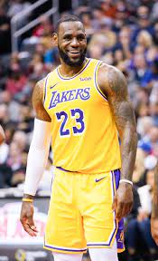

Early competitions

LeBron james
LeBron sdsadas

Representing Jamaica in his first Caribbean regional event, Bolt clocked a personal best time of 48.28 s in the 400 metres in the 2001 CARIFTA Games, winning a silver medal.
The 200 m also yielded a silver, as Bolt finished in 21.81 s.[28]
He made his first appearance on the world stage at the 2001 IAAF World Youth Championships in Debrecen, Hungary. Running in the 200 m event, he failed to qualify for the finals,
but he still set a new personal best of 21.73 s.[29] Bolt still did not take athletics or himself too seriously, however, and he took his mischievousness to new heights by hiding in the back of a van
when he was supposed to be preparing for the 200 m finals at the CARIFTA Trials.
He was detained by the police for his practical joke, and there was an outcry from the local community which blamed coach McNeil for the incident.[25] However, the controversy subsided, and both McNeil and Bolt went to the CARIFTA Games, where Bolt set championship records in the 200 m and 400 m with times of 21.12 s and 47.33 s, respectively.[28]
He continued to set records with 20.61 s and 47.12 s finishes at the Central American and Caribbean
Junior Championships.[30]